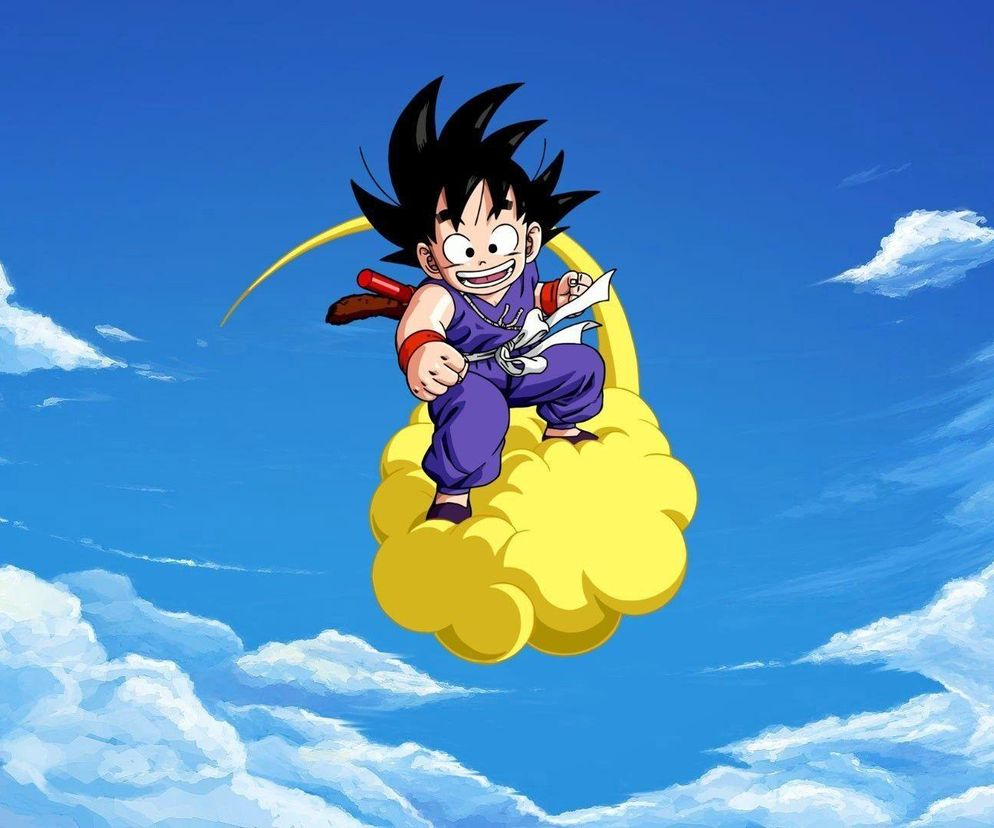

Dragon ball
Dragon Ball raconte le parcours de Son Goku, un garçon à queue de singe, depuis l'enfance jusqu'à l'âge adulte, où il est amené à explorer le monde à la recherche des Dragon Balls, des boules de cristal permettant d'exaucer des vœux.
VisiterDragon ball Z

Dragon Ball Z est un anime qui se déroule cinq années après le mariage de Son Goku et de Chichi. Tous deux sont parents de Son Gohan. Mais tout va basculer lorsque Raditz va débarquer sur Terre pour retrouver son fils, Son Goku. Une histoire atypique, dont nous vous dévoilons les secrets les mieux gardés.
VisiterDragon ball GT

L'histoire se déroule dix ans (cinq ans dans la version japonaise) après la fin de la série animée Dragon Ball Z. Sangoku termine l'entraînement de Oob dans le palais du Tout-Puissant. Pilaf, l'ennemi de Sangoku depuis les débuts de Dragon Ball souhaite utiliser les Dragon Balls pour dominer le monde.
VisiterDragon ball Super

L'histoire de Dragon Ball Super est une suite directe du manga d'Akira Toriyama et de la série Dragon Ball Z. Elle se situe après la fin de l'arc Boo et avant le début du 28e Championnat du Monde d'arts martiaux. Elle ne reprend donc pas le scénario de la série Dragon Ball GT.
Visiter